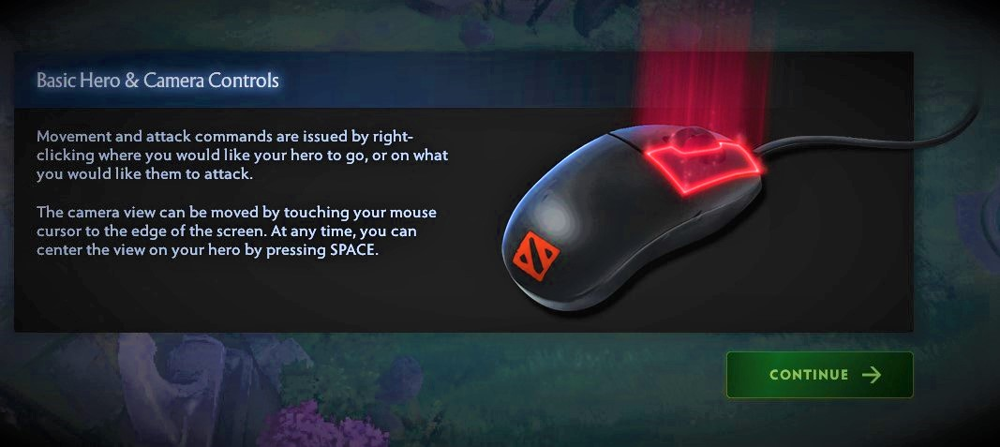
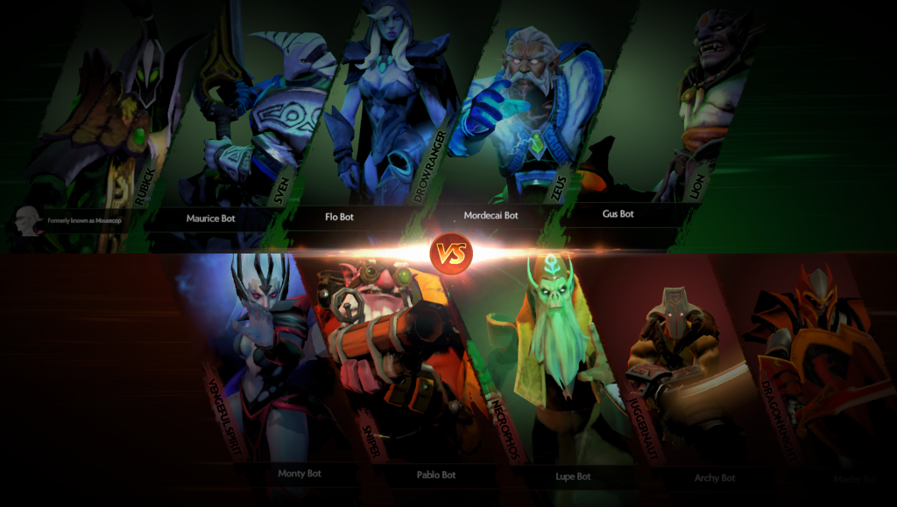
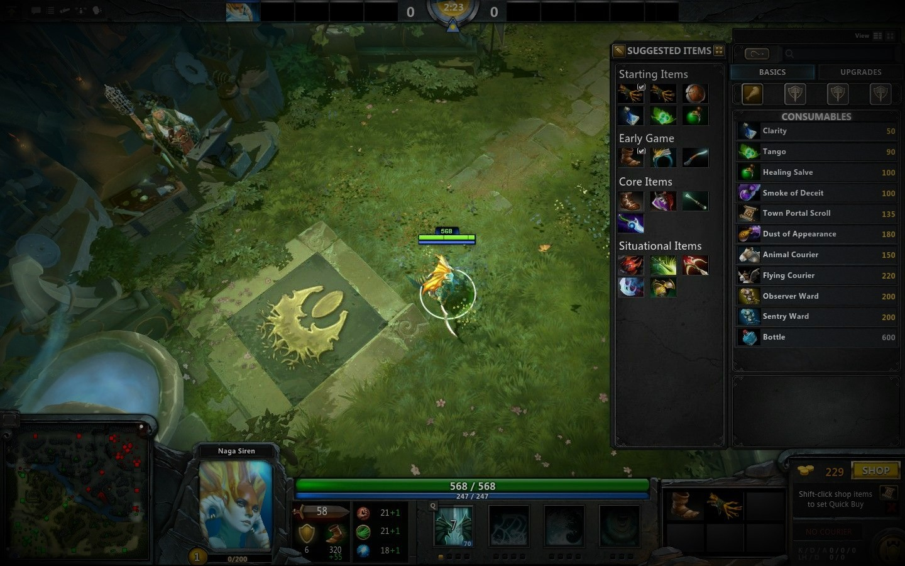
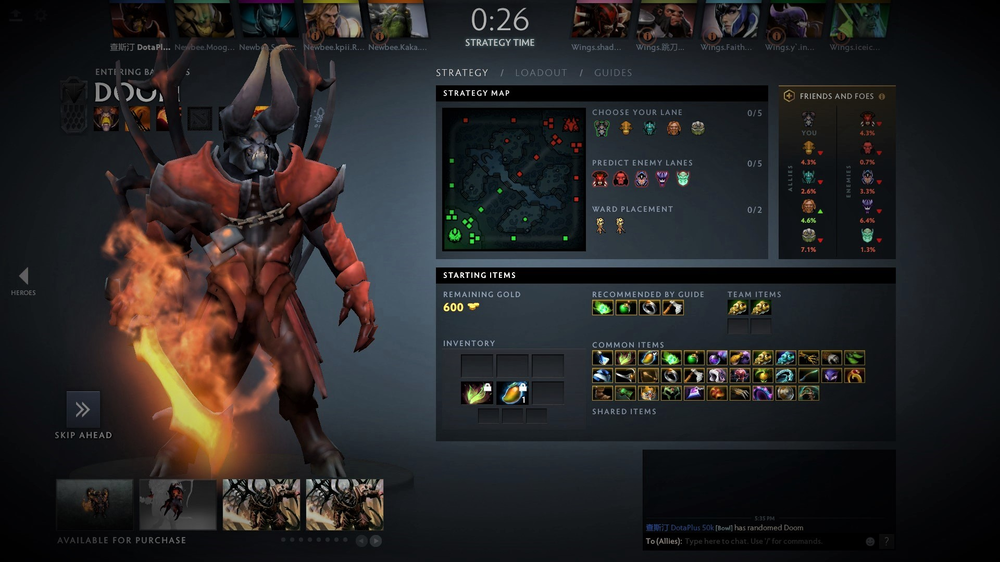
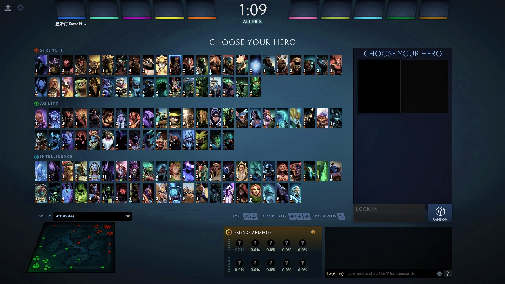
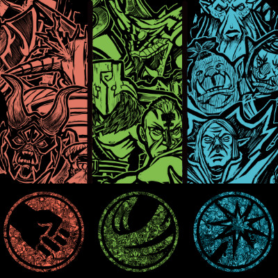

Doto 2 is a massively multiplayer online game featuring combat heroes from magical tacticians to fierce brutes and cunning rogues. Join players from all over the world, throw yourself into epic battles, and fight for victory!
If you're new to the Doto 2, below is our Newcomer's Guide
Explore the Menu and Battle Screen interfaces to get all the essential information you need during the battle.
When you first launch the game, you're prompted to complete Bootcamp. It's a training course designed to help you learn game basics in a real battle. After completing it, you get a nice reward of credits, in-game gold, and more bonuses to bolster your progress as you advance in DOTO 2.
Once you finish your Bootcamp training, you'll be introduced to your Main Menu. Get to know this screen—you'll be spending a lot of time here. This is where you view all your heroes, research heroes, train your heroes, chat with other players and, of course, start your first battle.
After clicking Battle!, you see the pre-battle loading screen with complete rosters for both teams and the objective of the battle. Keep an eye out for the useful tips in the center of the screen. When loading is complete, you see the Battle Screen, which provides key information while you are in battle.
The DOTO 2 map is divided into two sides, Radiant and Dire. Radiant is on the left, and it’s a verdant, idyllic paradise. Over the river that runs diagonally from top left to bottom right, you’ll find the Dire lands on the right side of the map, all covered in bugs and stuff.
DOTO 2 can be an extremely daunting game for new people to get into. They see an enormous hero pool, hundreds of items and hear about a toxic community and are immediately put off.
Mechanics are the inner workings of DOTO 2. The following is a list of mechanics topics. Click on each topic to view how they are calculated, where they originate, as well as their complex interactions with other mechanics elements. These properties are used by units in general, including heroes, creeps, and summons. Heroes possess a number of unique mechanics that other units don't.
Skills possessed by units, to be used on the battlefield. All heroes have at least three basic abilities and one ultimate ability. Hero abilities are acquired upon leveling up with experience. Most abilities need to be activated, while others are passive or augment a hero's basic attacks. Active abilities have a cooldown period between uses.
Heroes are the essential element of DOTO 2, as the course of the match is dependent on their intervention. During a match, two opposing teams select five out of 121 heroes that accumulate Experience Experience and Gold Gold to grow stronger and gain new abilities in order to destroy the opponent's Ancient. Most heroes have a distinct role that defines how they affect the battlefield, though many heroes can perform multiple roles. A hero's appearance can be modified with equipment.
Every hero has a primary attribute, which controls their attack damage. Every point in their primary attribute adds 1 point of damage to their attacks. A hero's primary attribute heavily impacts and commonly even defines the hero's role and how they are played. For example, Intelligence attribute symbol.png intelligence heroes are typically more dependent on abilities. A hero's primary attribute typically grows faster than the other two attributes.
